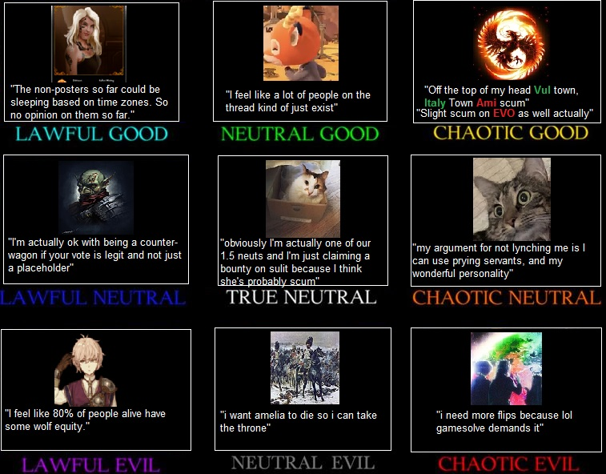

Oops, wrong thread.
Sorry I was useless that game. I hope I’m of more use next forum game.
I didn’t out because of Vulgards indecision on jailing me or Ami, if I was jailed it was simply a Grand Trial after Crich flipped Unseen
Had to gamble on geyde visiting chloe for a 2 for 1, other wise HoB overpowered me. I lost as soon as Italy didnt flip HoB tbh
I like how we debated on the jail when it didn’t even matter
1 Like
If you killed geyde or vulgard there, you won
It was actually a 2 out of 3 chance, not a 1 out of 2.
Yeah, after giving Hand nigh majority I knew I was ducked. Italy why couldn’t you just act more Towny 
How?
cuz there would have been only 2 HoB alive
Well you wouldn’t have won for sure, but you’d at least have had a chance
You’d be at arete’s mercy.
Ah, yeah I wasnt shooting for kingmaker
Vulgard wouldnt have died
3 Likes
Arete already showed some rapport with the open wolves, in my mind I wasn’t going to rely on them, publicly though, i pushed for kingmaker as Poacher
But yeah hindsight 20/20
By suggesting that you should be jailed over EVO, I was trying to do two things.
- Make Vulgard look as if they are still Duke.
- Subtly influence Arete to use that day healing ability of theirs, though I’m sure they were smart enough to use it anyways

I wrote a thing
It’s not a very good or well-written thing but it is certainly a thing
thing
The castle was always quiet in winter.
The Duke of the castle leaned against the wall of the cell where he kept his prisoners, just out of sight of the person he’d hauled away tonight. The whole court had been calling for the woman’s blood, shouting that she was a traitor to the kingdom. Yet now she sat in his cell, muttering things he could barely understand, and though he’d heard his orders clearly he could barely bring himself to lift the ceremonial axe – his ceremonial axe, he reminded itself – from where it hung on the wall.
I trust you to serve this kingdom well, he remembered his father saying. You are its future, my son, and you will guide them when I no longer can. He had flinched away from his father’s words, then; now they ran over and over through his mind.
He dug his nails into his fist as he walked back towards the cell where the woman sat. “I’m sorry,” he whispered.
She looked him directly in the eyes for the first time that night. “No you aren’t,” she said. “If you were sorry, you wouldn’t be doing this.”
With trembling hands, he swung the axe towards her neck, barely managing to connect before he turned away.
“Someone’s up late,” said a woman standing outside the door to his cell. The Duke recognized her; she was younger than most of the court, almost as young as he was, but he’d often consulted her eloquently-written essays on policy when trying to understand the decisions brought before his father every day.
The Duke raised his eyebrows. “And what of it?” he asked.
The woman shrugged. “Nothing, I suppose. Just a little unusual is all.”
The Duke shook his head. “I’m sorry, ma’am, I really have to go–”
The woman looked sideways at him. “Somethings wrong.”
The Duke froze for a second. “Everything is fine,” he said.
The woman paused for a moment, tilting her head to the side and furrowing her brow slightly. She took a visible breath. “Your Grace, I’d like to turn myself in for high treason, on the grounds that I’ve been conspiring with the Hand of Byzantium to bring down the fall of your kingdom,” she said, before switching to an ancient language that the Duke could just barely understand. “This I swear above all else: that what I have told you is the truth.”
The Duke froze. “Why are you telling me this–”
“It is your obligation under the laws of this kingdom to have me executed,” she said.
The Duke closed his eyes. I trust you to serve this Kingdom well. But was it really serving the kingdom to have her executed? Was that what his people needed?
He shook his head. “I’m not going to have you killed – do you need me to sneak you out of the castle, the guards will listen to my authority, I can get you out if that’s the problem, probably even to a border–”
She gave him an exasperated look. “The reason I’m here in the first place is to change things, Your Grace,” she said. “I – my family wasn’t as badly off as most in your – in this kingdom are, but I have a duty to the one’s who aren’t as lucky, and that’s not something I can do if I’m hiding from anyone with a noble title.”
“What do you want from me?” asked the Duke.
“I want you to join us,” she said. “This kingdom could be great, but not while it’s still under the rule of the Unseen.” She paused. “I know you hate what you have to do, I’ve seen the way your hands shake when you try to retire to your quarters–”
The Duke closed his eyes. The face of the woman in the cell flashed in his mind. Yet he could also imagine his father, staring at him with disappointment and betrayal.
You are this kingdom’s future, his father had told him.
When he thought about it that way, the answer was obvious.
“Very well,” he said. “I’ll join you.”
5 Likes
I love u
2 Likes

7 Likes
Takeaways:
Possessed is the epitome of lawful neutral in FM
Derps had godly reads. Got all the wolves nailed D2, including NK, and correct V reads
LolArete
Wolves were openwolfing in hindsight
2 Likes